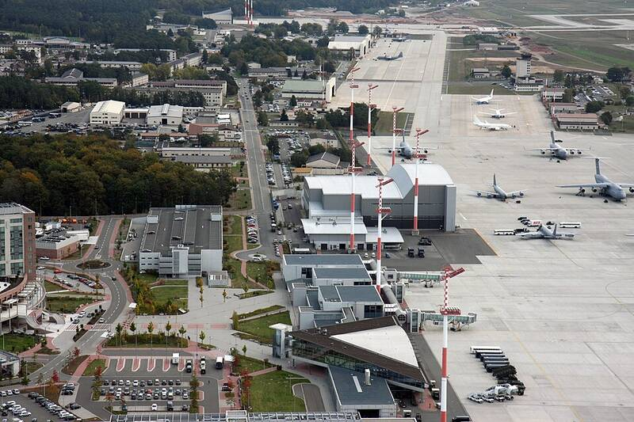

Ramstein Air Base Germany Germany · Military base · 49.437°N, 7.600°E Hangars and ramps at Ramstein Air Base. Photo: U.S. Army Corps of Engineers Europe District, Public domain (source) Headquarters of U.S. Air Forces in Europe. 1 Open in the interactive Watcher Sources Ramstein Air Base Wikipedia